What is Git?
Git is a version control system that is used to track changes made to files
Also referred to as a Source Code Management, or SCM tool.
This sounds familiar...
Most likely you have heard of other source control management systems: Subversion, Microsoft Team Foundation Server, Mercurial, etc.
Not all VCS's work the same
Git is a distributed version control system.This means that everyone working on a project in Git has a full copy of the projects history, not just the current state of the files
Not just for teams!
Even if you are editing files by yourself, there are still many benefits of Git that you can take advantage of
Individual Benefits
- Ability to undo changes
If you make a mistake, you can go back to a previous point in time to recover an earlier version of your work
Individual Benefits
- A complete history of all the changes made
If you ever want to see what your project looked like a day, week, month, or a year ago, you can check out a previous version of the project to see exactly what the state of the files was back then
Individual Benefits
- Complete documentation history of why changes were made
Often it's hard to remember why a change was made. With commit messages in Git, it's easy to document for future reference why you're making change
Individual Benefits
- The Confidence to change anything
Because it's easy to recover a previous version of your project, you can have the confidence to make any changes you want. If they don't work out, you can always get back to an earlier version of your work.
Individual Benefits
- Multiple History Streams
You can create different branches of history to experiment with different changes to your content or to build out different features independently. You can then merge those back into the main project history (the master branch) once they're done, or delete them if they end up not working out.
Team Benefits
- Ability to resolve conflicts
With Git, multiple people can work on the same file at the same time. Usually git will be able to merge the changes automatically. If it can't, it'll show you what the conflicts are and will make it easy for you to resolve them.
Team Benefits
- Independent History Streams
Different people on the project can work on different branches, allowing you to work on separate features independently and then merge the features when they're done.
Customizing Git
$ git config --settings
$ git config --global
$ git config --user
$ git config --global color.ui true
$ git config --global color.branch
$ git config --global color.diff
$ git config --global color.interactive
$ git config --global color.status
Advanced git
To display the commits that have deleted files
git config --diff-filter=D --summary
To create a new branch with the changes on the current one
git checkout -b my-new-branch-name
To reset to a certain commit in history
If you don't care about any of the local changes oyu have made, you can reset to one commit back by doing a hard reset:
git reset --hard HEAD~1
To merge your local changes with another branch
git merge <your-other-branch-name> --no-ff
Be sure to add the --no-ff command so you keep the merge history & avoid fast forwarding
To recover a deleted branch
git reflog
Then you can grab the SHA1 for the deleted branch. Copy the SHA1 & run the command:
$ git checkout
To actually recover the branch:
$ git checkout -b
The git command-line
git config
The git config allows you to configure git right from the command-line. This saves you from having to dig through hidden .git files, which can cause major problems to your git history.
git config
Before we get started using git, we want to make sure we have the proper settings right from the start.
git --version
First, let's check that we have git properly installed on our system. To check which version of git we currently have installed on our system:
git --version
git version 2.2.1
git version
git version 2.2.1
which git
To find the path for your current git installation:
which git
Should return something similar depending on if you are on a Mac or a Windows machine
/usr/local/bin/git
Local git setup
Let's setup our local git configuration so we can get started using git
Setting your git user name
To check if we have an existing user setup within our git config object:
git config --global user.name
To assign or add a new user to git
git config --global user.name "John Ryan"
Setting your git email
To check if you have an existing email address setup within our git config object:
git config --global user.email
To assign or add a new email address to git
git config --global user.email "John.C.Ryan2@target.com"
Git config settings
To see all of your current git config settings for the logged in user:
git config --global --list
To see your system wide git config settings:
git config --list
git add
Moves changes in your current working directory to the staging area.
note: The next step will be preparing your snapshot before officially making a commit in the history
git branch
git branch is your administration command for all things branch related. It lets you isolated dev environments from within a single repository.
git checkout
git checkout is the command for navigating around existing branches
note: This is also the command for checking out old commits, deleted files, & old revisions.
Creating Repositories
To get started using git, we need to either clone (download project + version history) or create a local repository from scratch.
Clone Existing Repo Using SSH
To clone an existing empty repo from github.com using SSH:
Copy the ssh endpoint 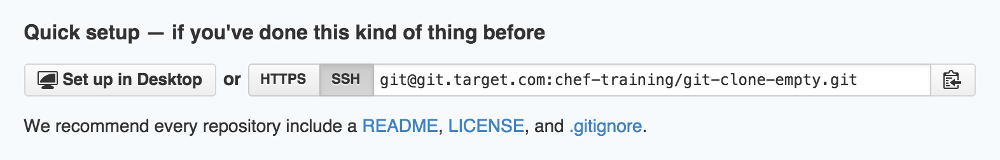
git clone git@git.target.com:chef-training/git-clone-empty.git
Clone Existing Repo Using HTTPS
You can also clone repo's from github using https, but you will need to provide your username & password each time you want to commit changes back up to the github remote.
Copy the https endpoint 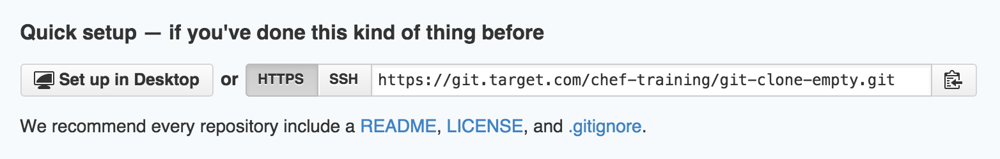
git clone https://git.target.com/chef-training/git-clone-empty.git
Clone Existing Repo
To clone an existing repo from github.com, go to the main project page & find the clone options located on the right side of the screen
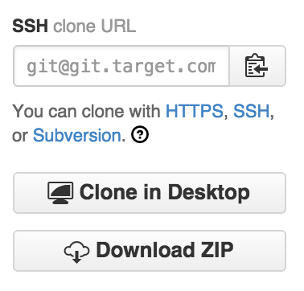
Clone Existing Repo
Copy the ssh url & type the following command into the terminal
git clone git@git.target.com:chef-training/git-clone-existing.git
What's happening
Here's whats happening when we read the log messaages from the terminal
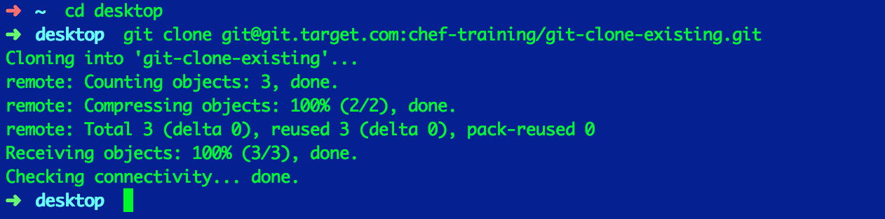
It should say that it has received 100% of the objects
Change directories
Now that we have successfully cloned this repo to our desktop, we still need to change directories (cd) so that we are in the project.
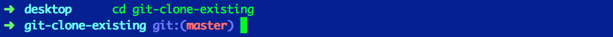
List all the files
Now when you type ls into the terminal you should see the README.md file & the index.html file
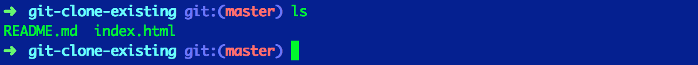
If you type ls -la to also show hidden files you should see the hidden .git directory as well
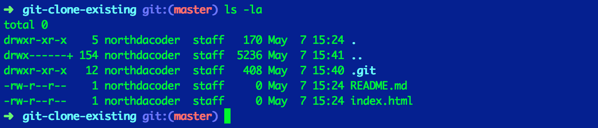
Remote Endpoints
When cloning an existing repo from github, you will already have an origin remote set for you to start making pull requests.
Check Existing Remotes
To see existing remotes set for any git repo type the following command:
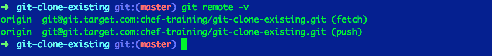
Remove a Remote
To remove a remote you can type git remote remove REMOTE-NAME, where REMOTE-NAME is the name of the remote you want to remove. The default remote from a cloned repo will have a name of origin.
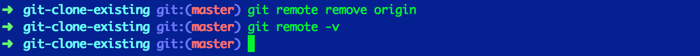
Add a Remote
To add a remote you can run the command:
git remote add REMOTE-NAME REMOTE-URL,
where REMOTE-NAME is the name of the remote you would like to add & REMOTE-URL is the endpoint that the remote will point to on GitHub. This could be origin, github, heroku, aws, docker, openstack, etc.
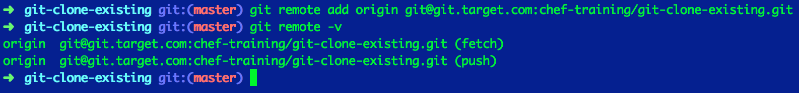
Change a Remote
To change the URL of an existing remote, run the command:
git remote set-url REMOTE-NAME NEW-REMOTE-URL
REMOTE-NAME - The name of the remote, whose endpoint you want to change NEW-REMOTE-URL - The new URL you want to assign to this remote
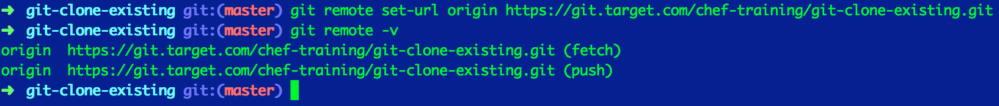
Setting up a Repository (Locally)
Now we will go through setting up a new git repository from scratch.
Create Empty Directory
Change directories to your desktop
CD is the command for "changing directories"
Create a new directory
Create a new directory (mkdir) & change (cd) into your directory 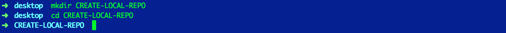
commands:
cd "change directory"
mkdir - "make directory"
New to the command line?
Checkout this great crash course on getting started!
note: This course goes through the commands for navigating in & out of directories, creating new files, deleting files, etc.
Git Init
Now that we are inside the directory, we can initialize git within this directory using the git init command
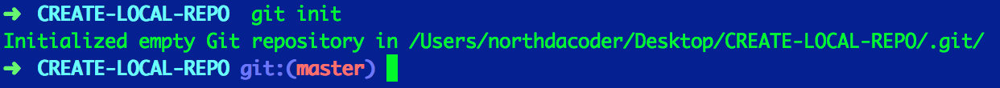
About git init
The git init command adds a hidden ".git" folder that will track all the file changes, history, etc. You will not need to make any changes directly to this folder.
Instead, git provides you access to different configurations through their command-line tools.
Although we don't need to go into the .git folder, we should check to make sure that its there & that git has been properly initialized.
To check that you have properly initialized git for this directory, type in the command ls -la:
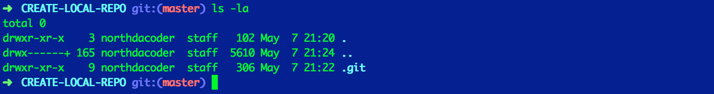
If we only type in ls, we won't be able to see the .git subdirectory since it is hidden from search by default
ls is the command for "list" all files. If we add -al, it will "list" "all" file in the current directory (+ hidden)
GitHub
In it's simplest form, GitHub is a website that allows you to upload a copy of your local Git repository
GitHub's origin
GitHub was originally created as a way to make it easier for developers to contribute to open source projects
Not just for open-source
In addition to open-source projects, GitHub is quickly becoming the default platform for software development
Source Code Management+
GitHub is more than just a source code management tool.
GitHub provides many additional tools for specifying, discussing, & reviewing software.
Who can use GitHub?
GitHub is used by software developers all over the world, but is also utilized by many others as well
GitHub Audience
- Business Stakeholders
- Product or Project Managers
- Designers
- Copywriters
- Lawyers
- Team Members
- Developers
Business Stakeholders
Business stakeholders are able to see how your project is going
Product or Project Managers
Project managers are able to accurately estimate delivery times & budgeting
Designers
Designers are able to deliver mockups, photos, html/css, & other graphical assets
Copywriter
Copywriters are able to contribute marketing copy or other valuable content to an application while still in the development phase
Lawyers
Lawyers are able to review the legal implications of any projects & are able to contribute terms and conditions documentation or any software's privacy policy
Team Member
Any team member who needs to review any code or content, or needs to contribute to a project
Developer
Developers are able to contribute to projects with team members they sit right next to or with team members located thousands of miles away, anywhere in the world. (anywhere with internet that is!)
Collaboration around communication
GitHub's web interface allows you to utilize the following features:
- Fork repos
- Clone repos
- Open pull requests
- issues
- wikis
Why use GitHub?
GitHub allows you to:
- Document requirements
- Collaborate on independent history streams
- Review work in progress
- Track team progress
Note: 1. Using issues, you can either document bugs or specify new features that you'd like to have your team develop. 2. Using branches and pull requests, you can collaborate on different branches or features. 3. By looking at a list of pull requests, you can see all of the different features that are currently being worked on, and by clicking any given pull request, you can see the latest changes as well as all of the discussions about the changes. 4. Skimming the pulse or looking through the commit history allows you to see what the team has been working on.
Git & GitHub Concepts
Commit Whenever you save your changes to one or more files to history in Git, you create a new commit.
Commit Message
Every time you make a commit, you need to supply a message that describes why the change was made. The commit message is invaluable when trying to understand later why a certain change was implemented.
Example usage: "Make sure to include Susan's comment about the new SEC guidelines in the commit message"
Branch
An independent series of commits off to one side that you can use to try out an experiment or create a new feature.
Example usage: "Let's create a branch to implement the new search functionality"
Master branch (master)
Whenever you create a new Git project, there is a default branch created that is called master. This is the branch that your work should end up on eventually once it's ready to push to production.
Example usage: "Remember never to commit directly to master"
Feature (or topic) branch
Whenever you're building a new piece of functionality, you'll create a branch to work on it. That's called a feature branch.
Example usage: "We've got way too many feature branches. Let's focus on getting one or two of these finished and into production"
Release branch
If you have a manual QA process or have to support old versions of your software for your customers, you might need a release branch as a place to make necessary fixes or updates. There is no technical difference between a feature or release branch, but the distinction is useful when talking about a project with your team.
Example usage: "We've got to fix the security bug on all of our supported release branches"
Merge
This is a way to take completed work from one branch and incorporate it into another branch. Most commonly you'll merge a feature branch into the master branch.
Example usage: "Great job on the 'my account' feature. Could you merge it into master so we can push it to production?"
Tag
A reference to a specific historic commit. Most often used to document production releases so you know exactly which versions of the code went into production and when.
Example usage: "Let's tag this release and push it into production"
Check out
To go to a different version of the project's history to see the files as of that point in time. Most commonly you'll check out a branch to see all of the work that has been done on it, but any commit can be checked out.
Example usage: "could you check out the last release tag?"
Pull request
Originally, a pull request was used to request that someone else review the work you completed on a branch and then merge it into master. Now, pull requests are often used earlier in the process to start a discussion about a possible feature.
Example usage: "Go create a pull request for the new voting feature so we can see what the rest of the team thinks about it"
Issue
GitHub has a feature called issues that can be used to discuss features, track bugs, or both.
Example usage: "You're right, the login doesn't work on an iPhone. Could you create an issue on GitHub documenting the steps to replacing the bug?"
Wiki
Originally developed by Ward Cunningham, wikis are a lightweight way of creating web pages with simple links between them. GitHub projects often use wikis for documentation.
Example usage: "Could you add a page to the wiki to explain how to configure the project to run on multiple servers?"
Clone
Often you'll want to download a copy of a project from GitHub so you can work on it locally. The process of copying the repository to your computer is called cloning.
Example usage: "Could you clone the repo, fix the bug, and then push the fix back up to GitHub later tonight?"
Fork
Sometimes you don't have the necessary permission to make changes directly to a project. Perhaps it's an open source project written by people you don't know or it's a project written by another group at your company that you don't work with much. If you want to submit changes to such a project, first you need to make a copy of the project under your user account on GitHub. That process is called forking the repository. You can then clone it, make changes, and submit them back to the original project using a pull request.
Example usage: "I'd love to see how you'd rewrite the home page marketing copy. Fork the repo and submit a pull request with your proposed changes."
Pull Requests Best Practices
Create pull requests for everything
note: Anytime you want to fix a bug or add a new feature, make sure to do it on a branch and then create a pull request to get input before merging your work into master
Write descriptive titles
note: Other team members will be looking at the pull requests page to get a sense of what's going on. The title should give them a good idea of what you're working on.
Take time to provide feedback through comments
note: Even if you're not @mentioned. This will give you a good sense of whats going on with the project and will improve the overall quality of the work.
@mention key people that should join the conversation
note: If you want feedback from marketing, legal, and the operations team, @mention necessary users to ensure they see the pull request and make it more likely that you get feedback
Run your tests
note: Make sure that at least one developer downloads the latest changes from a pull request, checks out the appropriate branch, and runs your automated tests. It isn't enough just to look at the code visually for nontrivial changes.
Decide on a clear policy around merging pull requests
note:
Most companies require that one or two people other than the primary author of the pull request review and provide a  before the pull request is merged in
before the pull request is merged in
Getting Started
To get started using git we need to:
$ git clone <github.com/SOME-REPO>
or
$ mkdir <NEW-REPO-NAME>
$ cd <NEW-REPO-NAME>
$ git init
Clone Existing Repo Using SSH
To clone an existing empty repo from github.com using SSH:
Copy the ssh endpoint
git clone git@git.target.com:chef-training/git-clone-empty.git
Clone Existing Repo Using HTTPS
You can also clone repo's from github using https, but you will need to provide your username & password each time you want to commit changes back up to the github remote.
Copy the https endpoint
git clone https://git.target.com/chef-training/git-clone-empty.git
Clone Existing Repo
To clone an existing repo from github.com, go to the main project page & find the clone options located on the right side of the screen
Clone Existing Repo
Copy the ssh url & type the following command into the terminal
git clone git@git.target.com:chef-training/git-clone-existing.git
What's happening
Here's whats happening when we read the log messaages from the terminal
It should say that it has received 100% of the objects
Change directories
Now that we have successfully cloned this repo to our desktop, we still need to change directories (cd) so that we are in the project.
List all the files
Now when you type ls into the terminal you should see the README.md file & the index.html file
If you type ls -la to also show hidden files you should see the hidden .git directory as well
Remote Endpoints
When cloning an existing repo from github, you will already have an origin remote set for you to start making pull requests.
Check Existing Remotes
To see existing remotes set for any git repo type the following command:
Remove a Remote
To remove a remote you can type git remote remove REMOTE-NAME, where REMOTE-NAME is the name of the remote you want to remove. The default remote from a cloned repo will have a name of origin.
Add a Remote
To add a remote you can run the command:
git remote add REMOTE-NAME REMOTE-URL,
where REMOTE-NAME is the name of the remote you would like to add & REMOTE-URL is the endpoint that the remote will point to on GitHub. This could be origin, github, heroku, aws, docker, openstack, etc.
Change a Remote
To change the URL of an existing remote, run the command:
git remote set-url REMOTE-NAME NEW-REMOTE-URL
REMOTE-NAME - The name of the remote, whose endpoint you want to change NEW-REMOTE-URL - The new URL you want to assign to this remote
Setting up a Repository (Locally)
Now we will go through setting up a new git repository from scratch.
Create Empty Directory
Change directories to your desktop
CD is the command for "changing directories"
Create a new directory
Create a new directory (mkdir) & change (cd) into your directory
commands:
cd "change directory"
mkdir - "make directory"
New to the command line?
Checkout this great crash course on getting started!
note: This course goes through the commands for navigating in & out of directories, creating new files, deleting files, etc.
Git Init
Now that we are inside the directory, we can initialize git within this directory using the git init command
About git init
The git init command adds a hidden ".git" folder that will track all the file changes, history, etc. You will not need to make any changes directly to this folder.
Instead, git provides you access to different configurations through their command-line tools.
Although we don't need to go into the .git folder, we should check to make sure that its there & that git has been properly initialized.
To check that you have properly initialized git for this directory, type in the command ls -la:
If we only type in ls, we won't be able to see the .git subdirectory since it is hidden from search by default
ls is the command for "list" all files. If we add -al, it will "list" "all" file in the current directory (+ hidden)